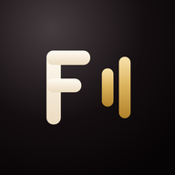

FIEZEL bisa mengetuk pelan saat target harian belum selesai, atau saat ada kata dan pola yang menurut jadwal pengulangan sudah waktunya diulang sebelum sempat lupa.
Paling banyak satu pengingat sehari dan tidak pernah di jam tidur. Bisa dinyalakan atau dimatikan kapan saja lewat Pengaturan.
Belajar tetap bisa dimulai tanpa ini.
Pilih "Nanti saja" dan FIEZEL langsung terbuka. Pengingatnya menunggu di Pengaturan kalau suatu saat dibutuhkan.

Masuk ke FIEZEL
Akunmu menyimpan progres belajar, streak, dan AI tutor supaya tetap sama di setiap perangkat.
Memeriksa status akun…
Semua materi dan latihan tetap jalan tanpa akun — tutor AI dan suara neural baru bisa dipakai kalau kamu masuk akun Puter dan ada jaringan.
Jendela login Puter terbuka sebentar di atas FIEZEL, lalu tertutup sendiri begitu selesai - kamu tidak akan dipindahkan ke browser lain.
Dengan melanjutkan, kamu menyetujui progres belajarmu disimpan di akun Puter milikmu sendiri.